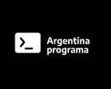
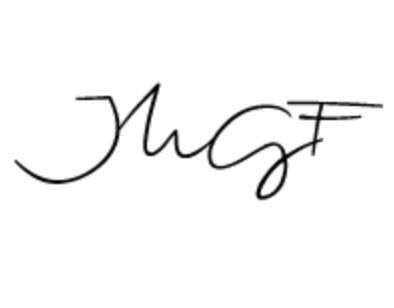

Hola, soy Paula, tengo 28 años y siempre estoy en la constante búsqueda del aprendizaje. Mi interés en aprender surge de la búsqueda de ser cada vez mejor persona y poder ayudar a quien lo necesite; y, como profesional de dar el mejor servicio posible, de dar el 120% de mí en cada proyecto trabajado.
En cada rubro, proyecto y puesto de trabajo siempre estoy aprendiendo, como si fuera un Shoschinsha (que significa el “eterno aprendíz” en Japonés).
Mi filosofía de vida, es encontrar la felicidad en todo lo que aprendo y hago, de disfrutar las pequeñas cosas de la vida, de alegrarme por cada pequeño pasito dado, nunca debemos perder el enfoque de quien queremos ser y de qué queremos lograr, en mi caso, ser mejor persona y darle al mundo una mejor versión
Mi formación

Programación
Curso del gobierno de la Nación Argentina: Etapa 1 y 2.
Título: Full Stack Developer Jr.

Community Manager
Curso dictado por Juan Manuel Gareli Fabrizzi
Título: Community Manager
Martillera Pública y Corredora Inmobiliaria
Carrera realizada en la Universidad Católica de Santa Fe
Título: Martillera pública y corredora inmobiliaria.
Matriculada en el Colegio de Corredores Inmobiliarios de Santa Fe: Mat. N° 546.
Hard y Soft skills:
Soft skill:
Comunicación: 10%
Trabajo en equipo: 10%
Resiliencia: 10%
Proactividad: 10%
Capacidad de respuesta: 10%
Adaptabilidad: 10%
Atención a los detalles: 10%
Colaboración: 10%
Resolución de conflictos: 10%
Empatía: 10%
Inteligencia emocional: 10%
Organización: 10%
Responsabilidad: 10%
Autoconciencia: 10%
Gestión del tiempo: 10%
Ética laboral: 10%
Hard skills:
Servicios en la nube: 10%
Aprendizaje automático: 10%
Lenguajes de programación: 10%
Reparación y mantenimiento de computadoras: 10%
Gestión de la información: 10%
Proyectos personales:
Presentar proyectos en fundaciones y ONG que requieran de ayuda tecnológica (una página WEB y/o una aplicación) para mejorar sus servicios
Trabajos como voluntaria:
1- Página WEB para “la casita de Juan Diego”, fundación por la lucha contra la adicción.
Información de contacto:
María Paula Freyre Teléfono: 342 – 155 373 693 Correo: mariapaulafreyre@gmail.com